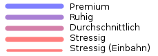

Beschreibung
Die Wegstrecken sind in 3 + 1 Kategorien unterteilt:
Ausflugsqualität: außergewöhnlich schön und ruhig, kein Autoverkehr; Empfehlung für Radler mit Kindern
Gemütlich: vom Autoverkehr getrennter Radweg oder sehr verkehrsarme Strecke; Empfehlung für Ungeübte oder gemütliche Fahrten
Durchschnittlich: Radeln im Autoverkehr, aber ohne besondere Platznot.
Stressig: schnelle aber verkehrsreiche Verbindung (LKWs, hohes Tempo) oder Gefahrenstelle, mit Vorsicht genießen; längere Abschnitte nur für erfahrene Radler empfohlen.
Die Radlkarte hilft dir bei der Orientierung in Wien: ein Wegenetz zeight Alltagswege, die Karte darunter liefert radfahrrelevante Details.
Das grobmaschig gehaltenes Netz von gesammelten Alltagswegen soll einen Überblick über erprobte Routenvarianten z.b. zwischen zwei Bezirken geben. Die Wahl ob schnell oder gemütlich liegt bei dir: verkehrsreiche aber dafür direkte Verbindungen gibt es ebenso wie die gemütlichen aber langsameren Alternativen.
Wie die letzten Häuserblöcke zum Ziel erreicht werden kannst du dann auf der Karte sehen. Für Räder geöffneten Einbahnen und Fußgängerzonen, Mehrzweckstreifen und Radwege zeigen dir alle Möglichkeiten. Radgeschäfte, U-Bahn- und Citybike-Stationen fehlen natürlich auch nicht.
FAQ:
Q: Vor meinem Haus gib's einen Radweg, wieso fehlt er in der Radlkarte?
A: Die Radlkarte basiert auf OpenStreetMap, was wie Wikipedia funktioniert. Wenn du den Fehler dort behebst ist er in Kürze auch in der Radlkarte behoben.
Q: Ich fahre oft vom Xten in den Yten Bezirk, ich kenn da noch einen feinen Weg!
A: Super, zeichne ich gerne ein! Bitte beschreib ihn auf der Wall, oder schick mir einen GPS-Track.
Legende
Empfohlene Wege:

Radwege:
Dunkelgrün: getrennter Radweg
Hellgrün: Fahrradstreifen auf der Fahrbahn
Straßen:
Grau: Fahrverbot für Fahrräder
Braun: nicht asphaltiert (z.B. Feldweg)
Grau gepunktet: Stiege
Einbahnpfeil: Einbahn gilt auch für Radfahrer
Dunkelgrau strichliert: Gleise
Symbole:
Grüne Quadrate: Radabstellmöglichkeiten
Blaue Quadrate: Öffihaltestellen
Jeden Sonntag um 2 Uhr früh
Kontakt:
Markus Straub
Porzellangasse 33a
1090 Wien
markus.straub.at@gmail.com